Место за вашим столом
Как я спроектировала сервис, который помогает выбрать столик в ресторане
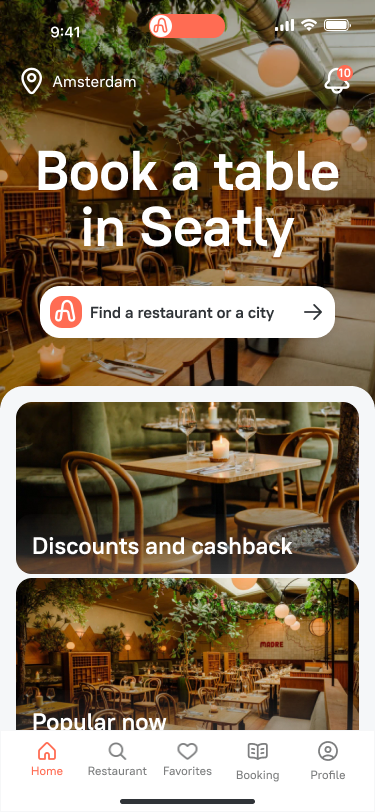
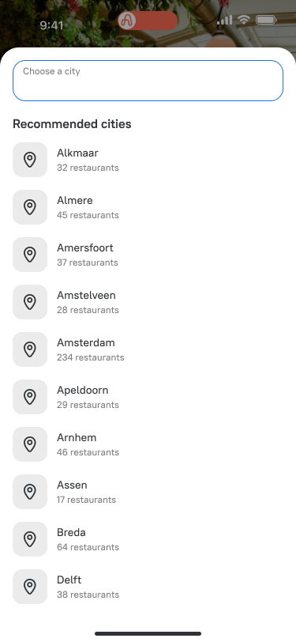
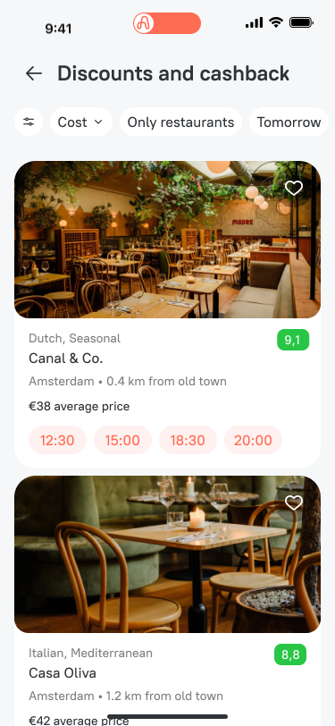
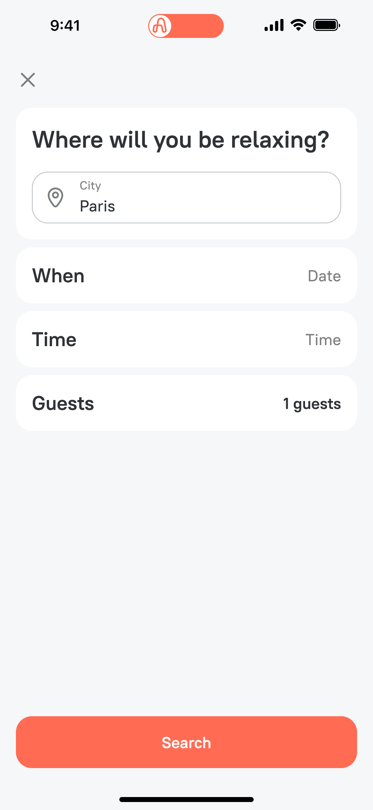

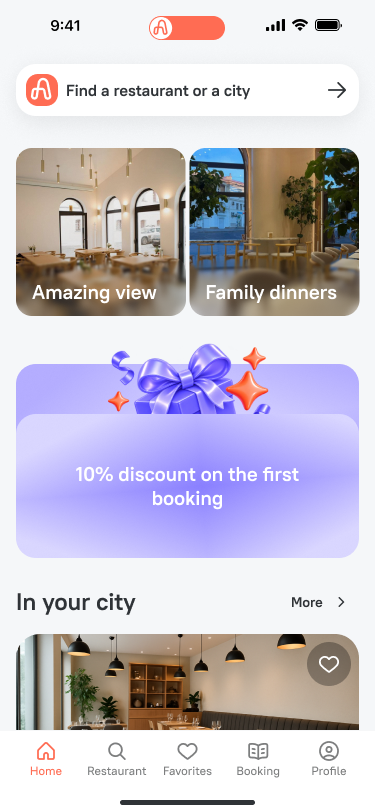

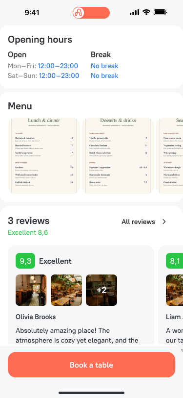
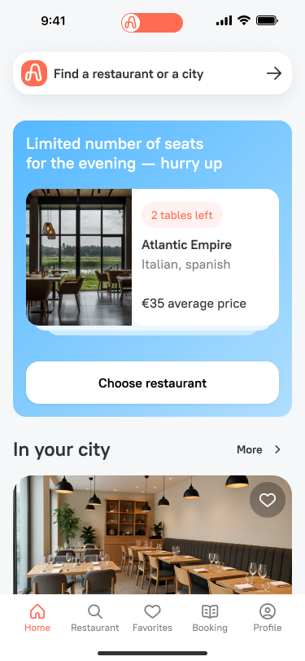
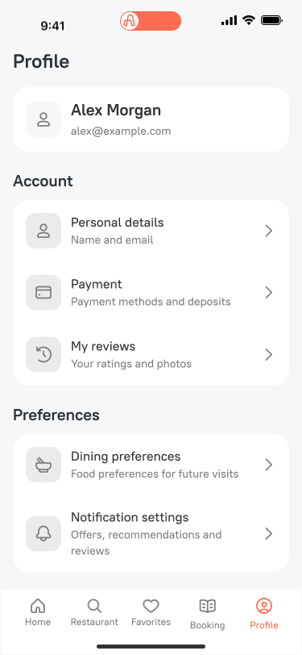
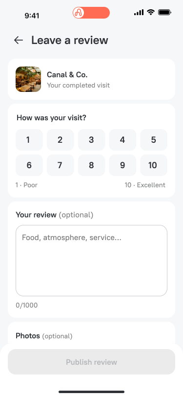
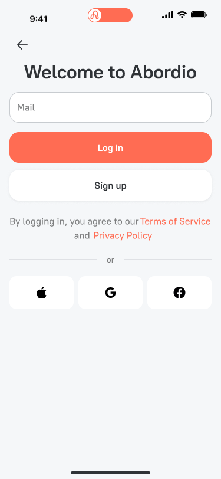
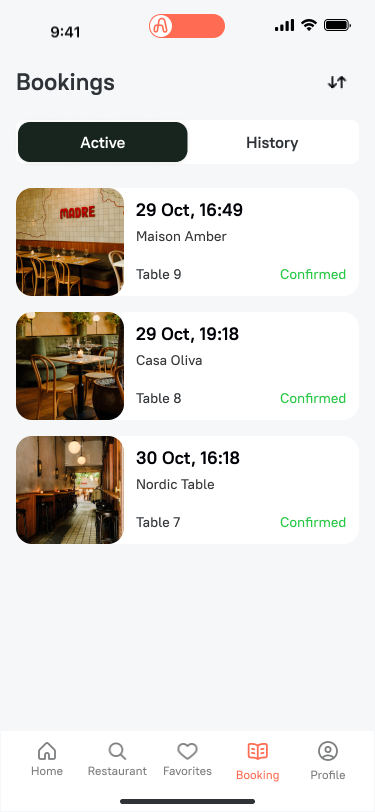
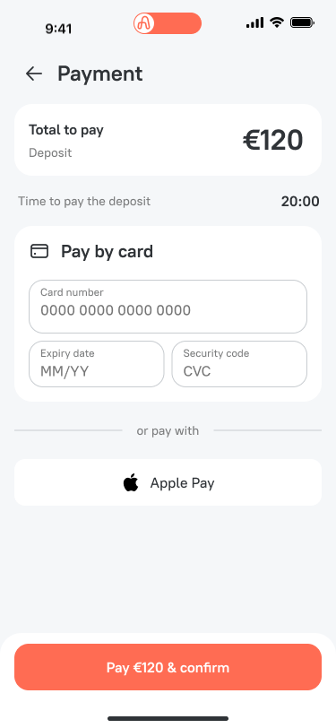
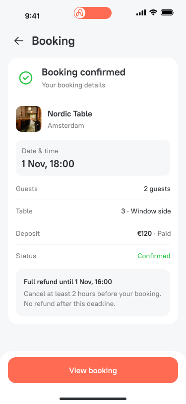
О продукте
Abordio — сервис бронирования ресторанов в Нидерландах с выбором конкретного стола. Пользователь может заранее выбрать место у окна, на террасе или в тихой части зала и оформить бронь
Контекст и задачи
Для бизнеса: помогать рестораторам повышать загрузку зала, заполнять менее востребованные столы с помощью специальных предложений и снижать количество неявок за счёт депозитов
Для пользователя: найти ресторан, выбрать удобное время и конкретный стол, заранее понять условия депозита и отмены
Метрики успеха: MAU, ARPU, Average session length, лояльность через NPS, конверсия из просмотра ресторана в подтверждённую бронь
Команда и моя роль
Я работала над проектом в команде из трёх дизайнеров, продакт-менеджера, одного frontend- и двух backend-разработчиков. Вместе с продактом и старшим дизайнером участвовала в конкурентном анализе, приоритизации гипотез, проектировании информационной архитектуры и user flow. Самостоятельно проектировала ключевые разделы приложения, продумывала пограничные состояния и развивала UI-кит, собирала интерактивные прототипы
С какой гипотезы мы начали
Мы предположили, что гостям важно заранее выбрать стол и понимать условия брони, а скидки на свободные места могут помочь ресторанам повысить загрузку. Эти гипотезы предстояло проверить с гостями и рестораторами
Конкурентный анализ
Вместе с продактом и старшим дизайнером мы изучали, как люди находят и бронируют рестораны в других сервисах. Целью было понять, какие задачи уже закрывают существующие продукты, какие решения стали привычными для гостей и где Abordio может предложить дополнительную ценность. Особое внимание уделяли следующим сценариям:
- Выбор места
- Предложения и скидки
- Оформление брони
- Внесение и возврат депозита
- Управление бронью
| Возможность | OpenTable | TheFork | Zenchef | Tock | Resy |
|---|---|---|---|---|---|
| Выбрать конкретный стол на плане | |||||
| Написать ресторану по своей брони | |||||
| Найти другое доступное время | |||||
| Внести депозит или предоплату | |||||
| Изменить дату, время или число гостей | |||||
| Вернуть депозит при отмене | |||||
| Получить бонусы по программе лояльности | |||||
| Скидки и специальные предложения |
Глубинные интервью
Следующий шаг — глубинные интервью о том, как люди выбирают и бронируют рестораны. Важно узнать, что им нравится в привычных сервисах, с какими трудностями они сталкиваются и чего им не хватает
На интервью разберём недавние случаи:
- Как человек выбирал ресторан и оформлял бронь
- Почему выбрал конкретный сервис или другой способ бронирования
- Что было удобно и помогло принять решение
- Где возникли сложности и как удалось их решить
- Чего не хватило и что хотелось бы изменить
На основе этих историй сформулируем JTBD: в какой ситуации человек ищет ресторан, какую задачу хочет решить и какого результата ожидает
Функциональность MVP
Предварительный состав первой версии должен позволить пройти весь путь от выбора ресторана до подтверждённой брони и проверить основную гипотезу о выборе стола
- Поиск ресторана и информация для выбора: расположение, фотографии, меню и условия бронирования
- Выбор даты, времени и числа гостей с проверкой доступности
- План зала с доступными столами и их вместимостью
- Оформление брони с понятной суммой депозита и условиями отмены
- Подтверждение, просмотр статуса, отмена и возврат по правилам ресторана
- Продолжение прерванного оформления и обработка ошибок оплаты
Гипотезы и их приоритизация
В первую версию входят гипотезы о выборе стола, доступности, условиях депозита и продолжении бронирования. P0 — обязательный приоритет для запуска MVP
| Приоритет | Гипотеза | Что включить | Что проверить |
|---|---|---|---|
| P0 | Если дать возможность выбрать конкретный стол, пользователь будет увереннее, что место соответствует его ожиданиям | План зала с выбором стола | Оправдывает ли выбор стола дополнительные действия |
| P0 | Если учитывать дату, время и число гостей до выбора стола, пользователь реже будет выбирать неподходящий вариант | Доступность и вместимость по параметрам брони | Ошибки выбора и завершение бронирования |
| P0 | Если заранее показать депозит и условия отмены, пользователю будет проще принять решение о бронировании | Сумма и условия возврата до оплаты | Понимание условий и завершение оплаты |
| P0 | Если сохранять контекст и объяснять статус, пользователь сможет продолжить оформление после прерывания | Восстановление брони и проверка оплаты | Успешность продолжения сценария |
Информационная архитектура и user flow
Я участвовала в проектировании структуры приложения и пользовательских сценариев. Информационная архитектура связывает поиск, страницу ресторана и управление бронированиями
User flow показывает путь от выбора ресторана до подтверждения брони: параметры визита, выбор стола, данные гостя и оплата, если нужен депозит. Отдельно учитываются возврат к оформлению и изменение параметров
Решение: два входа в единый сценарий бронирования
Пользователь может прийти с конкретным намерением или сначала изучать рестораны. Я проработала оба пути
Поиск с главной → ресторан, дата, время и гости → выбор стола → данные → подтверждение или оплата
Подборка, карта или избранное → страница ресторана → параметры бронирования → выбор стола → оформление
После ввода параметров оба пути используют одну логику. Это помогает сохранить последовательность действий независимо от точки входа и избежать ситуации, когда человек выбирает стол до проверки его доступности
Решение: план зала как рабочий инструмент
На плане пользователь видит доступность столов, может переключаться между этажами и выбирать подходящее место
Обычный доступный стол выбирается сразу. Если у стола есть специальное предложение, открываются его условия и действие выбора. Так дополнительный шаг появляется там, где пользователю действительно нужна информация
Я также проработала зависимость выбора от параметров: если после изменения числа гостей стол больше не подходит, выбранное место и связанная с ним скидка сбрасываются
Решение: депозит без перегрузки информацией
Информацию о депозите распределила по моментам принятия решения
В характеристиках ресторана пользователь узнаёт о наличии депозита. При оформлении видит сумму и краткие условия возврата. Подробное объяснение открывается отдельно, а сама оплата вынесена на самостоятельный экран
В интерфейсе учитываются согласованные правила: депозит рассчитывается как средний чек, умноженный на число гостей; на внесение даётся 20 минут; срок возвратной отмены задаёт ресторан. Скидка на стол не уменьшает депозит
Решение: возвращение к бронированию после прерывания
Я прорабатывала состояния, в которых пользователь теряет соединение, закрывает приложение, не успевает оплатить или не понимает, завершился ли платёж
Задача интерфейса — показать актуальный статус и следующий шаг. Продолжение оформления должно учитывать доступность стола и результат оплаты, а не просто возвращать пользователя на предыдущий экран
Развитие UI-кита
Параллельно с экранами я развивала UI-кит, чтобы одинаковые сущности сохраняли единый внешний вид и поведение
Дополняла состояния инпутов, селектов, кнопок и списков; прорабатывала карточки ресторанов, бронирований и отзывов, пины на карте, модальные окна, уведомления и пустые состояния
Отдельное внимание уделяла поведению компонентов: длинным названиям, переносу текста, скроллу, выбранным и недоступным состояниям. Это позволяло проверять интерфейс на реалистичном контенте и уменьшать расхождения между разделами
Ожидаемый результат и метрики
После запуска важно проверить, помогает ли выбор конкретного стола гостям завершать бронирование, а ресторанам — заполнять зал. Для оценки будем отслеживать:
- Конверсию в подтверждённую бронь: какая доля пользователей завершает бронирование после просмотра ресторана
- Завершение выбора стола: какая доля пользователей переходит от плана зала к оформлению
- Повторные бронирования: какая доля гостей возвращается и бронирует снова
- Неявки: какая доля подтверждённых бронирований заканчивается без визита
- Загрузку столов: какую долю доступных мест и времени занимают бронирования через сервис
Это критерии будущей проверки, а не уже достигнутые результаты. Данные о бронированиях нужно сопоставить с обратной связью гостей и ресторанов